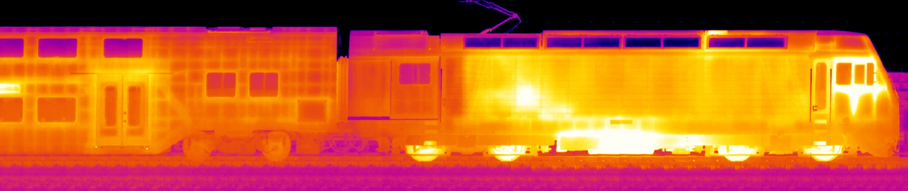

Berner Fachhochschule
Bachelor of Science in Computer Science
Bachelor Thesis

| Studenten | Sebastian Häni, haeni.sebastian@gmail.com |
| Raphael Laubscher, raphael.laubscher@gmail.com | |
| Betreuer | Marcus Hudritsch, marcus.hudritsch@bfh.ch |
| SBB | Ueli Kramer, ueli.kramer@sbb.ch |
| Pietro Loderer, pietro_maria.loderer@sbb.ch | |
| Urs Gehrig, urs.gehrig@sbb.ch |
2017-07-31, Version 1.1
This thesis was done as part of a bachelor's degree study at ZHAW Zurich University of Applied Sciences in Zurich. The source code of this document is available online at https://github.com/sebastianhaeni/thermotrains.
All sources are numbered [n] and listed in the bibliography in the appendix. Basic knowledge in computer science is required for reading and understanding the thesis. The most important acronyms and concepts are explained in the glossary that can be found in the appendix as well.
This document has been written in HTML and was converted into a PDF document with Prince. The font used is Helvetica Neue, created by D. Stempel AG and based on Helvetica by Max Miedinger.
The icons used on the cover and in this document are from small-n-flat, they are released to the public domain.
WorldSkills International manages its web infrastructure manually with a small team of developers. There is no designated system administrator, the responsibility of managing the web infrastructure is shared among the developers. The author of this thesis is employed as a developer by WorldSkills International. Target of the thesis is to develop a concept for a testable and reproducible infrastructure where all changes are done within a revision control system. This increases visibility of changes within the developers team and makes the change tracable.
Many software solutions exist for provisioning of servers and deployment of applications. They can be grouped into software containers, configuration repository, and remote command execution. With software containers the software needed to run an application is encapsulated and run in operating system-level virtualization. A configuration repository is a centralized repository with configuration files and software is used to configure servers based on the configuration files. With remote command execution the installation commands and configuration files are transmitted in a coordinated manner to a remote server.
The current infrastructure requirements were analyzed and documented. The different types of software for provisioning of servers and deployment of applications were considered for solving the problem. Each type was evaluated with a popular representative according to the requirements. The evaluation showed that software containers need additional software for the orchestration of the provisioning and deployment. Due to the additional complexity and the missing requirements for software containers their usage was delayed to a potential separate project after this thesis. The automation software Ansible was choosen as best fitting for the requirements.
An architecture concept for an automated infrastructure was developed and successfully verified in a proof-of-concept. All software and configuration files required are defined in structured text files that can be read and transmitted to the server with Ansible. Local development and testing can be done in a virtual machine on the developers’ computer. The whole infrastructure can easily be cloned by running the provisioning scripts against new servers. A continious integration server executes the provisioning script after each change and verifies the infrastructure with system tests. The automated creation of the proof-of-concept infrastructure takes about 20 minutes. The automated process of setting up a new infrastructure environment for testing is simply initiated by creating a new branch adhering to a naming scheme. The implementation of the architecture concept and a migration to the new automated infrastructure is planned for fall 2015.
WorldSkills International is a non-profit membership association which organizes a world championship in skilled professions every two years. The author of this thesis is employed by WorldSkills International. To manage members and to organize the preparation and execution of the competition the organization runs multiple web applications. The mix of PHP and Java applications consists of legacy systems and a newly developed software system with a service-oriented architecture.
All web software is running on rented virtual servers with a Linux operating system. They are managed manually using a web control panel (Parallels Plesk). Changes to the infrastructure are done by the four internal software developers manually.
Fundamental changes like the migration to a new server or the switch to a new runtime engine require a lot of knowledge about the existing system and manual testing of the new installation.
The main goal of this thesis is to develop a concept for a versioned, testable and reproducible infrastructure. Changes to the system should be visible for the IT team and traceable if needed. As a result knowledge is shared in written form.
To achieve this goal, manual steps to build or change the infrastructure should be replaced by code stored in a revision control system. Three different types of software for provisioning of servers and deployment exist at the moment:
These types of software should be evaluated and an architecture documentation as well as a test concept should be written. The proposed architecture should then be tested in a proof-of-concept.
The following tasks will be completed by the student as part of the bachelor thesis:
The following gantt diagram shows an overview of the actual timeline during the project as well as the dates of the most important milestones.